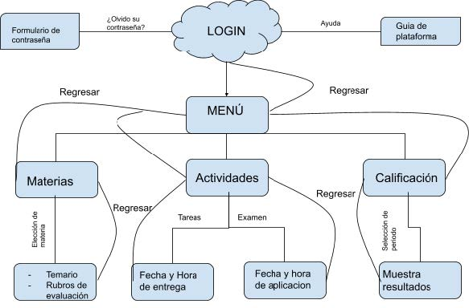
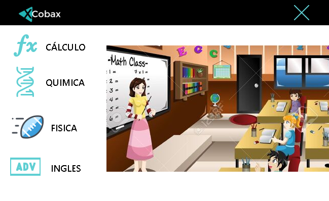
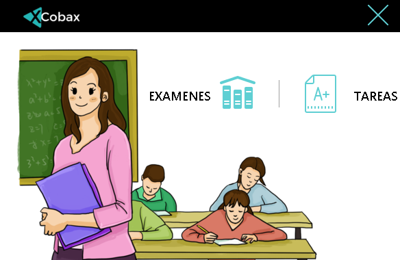
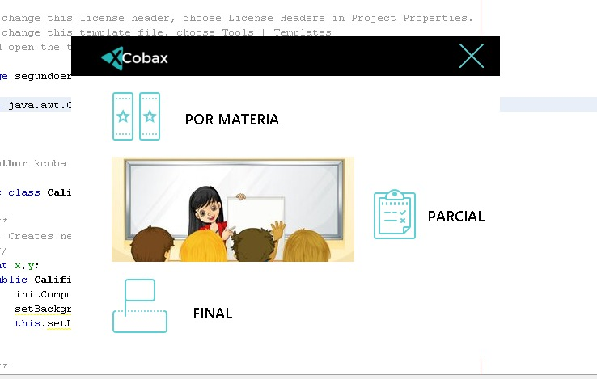

Público Objetivo
Estudiantes
Adolescente de 15-18 años, graduada de secundaria y cursando el nivel medio superior, con medios de comunicación para tomar clase de forma remota de manera correcta.
Docentes
Adulto de 25-60 años con conocimientos en materias relacionadas al nivel medio superior y con experiencia en enseñanza, con medios de comunicación para impartir clase de forma remota de manera correcta.
Diagrama: Casos de Uso

Interfáz de la Plataforma
| Nombre y Descripción | Datos e Importancia | Vista |
| 01. Inicio Sesión Descripción: En la parte inferior de la ventana aparecerá una opción que dirá ayuda, en el cual se abrirá un recuadro por si no entiende cómo interactuar con la ventana de inicio de sesión. En caso contrario el usuario entra a la ventana e inserta su usuario y su respectiva contraseña; si son correctos sus datos que inserto al dar click en la flecha que representa lo siguiente será redirigido a la ventana bienvenida. En caso de que haya olvidado su contraseña, puede dar click en la opción ¿Olvidó la contraseña? y después seguirá los pasos que se le indican para que se le envíe un correo y desde el enlace que se le hizo llegar poder entrar de nuevo. |
Datos de entrada: Usuario Contraseña Datos de salida: Ventana de bienvenida Recuadro de recuperar contraseña Recuadro de ayuda Importancia: Alta Actores: Usuarios Sistema Observaciones: Los alumnos serán registrados por sus tutores por lo que es necesario que el alumno esté en contacto con su tutor para ser agregados al sistema. |
 |
| 02. Ventana Bienvenida Descripción: El usuario ingresa a la ventana de bienvenida en la cual encontrará 3 módulos los cuales son: materias, actividades, calificaciones, dependiendo lo que el alumno necesite ingresara a la ventana dando un click sobre el apartado o la imagen y será redirigido a cada ventana correspondiente. |
Datos de entrada: Depende del módulo que selecciones el estudiante. Datos de salida: Ventana de materias Ventana de actividades Ventana de Calificaciones Importancia: Alta Actores: Usuarios Sistema |
 |
| 03. Ventana Materia (cursos) Descripción: El usuario al ingresar a la ventana de materias se encontrará a sus 4 cursos que son cálculo, química, física e inglés y dando un click sobre el respectivo recuadro será redirigido a su respectiva ventana. |
Datos de entrada: Depende del módulo que selecciones el estudiante. Datos de salida: Ventana de cálculo Ventana de química Ventana de física Ventana de Inglés Importancia: Alta Actores: Usuarios Sistema Observaciones: Se tendrá un recuadro para poder regresar a la ventana de bienvenida. |
 |
| 04. Ventana Actividades (tarea, examen) Descripción: El alumno será redirigido a la ventana de sus actividades en el cual encontrará dos apartados los cuales son tarea y exámenes con un click sobre cada apartado podrá ingresar nuevamente a su respectiva ventana. |
Datos de entrada: Depende del módulo que selecciones el estudiante. Datos de salida: Ventana de tarea Ventana de examen Importancia: Alta Actores: Usuarios Sistema |
 |
| 05. Ventana Calificaciones (materia, parcial, final) Descripción: El alumno será redirigido a la ventana de calificaciones en el cual encontrará tres apartados materia, parcial, final y cada uno de ellos al dar click sobre su respectiva imágenes, el alumno podrá visualizar sus respectivas calificaciones que logró obtener a lo largo del ciclo escolar. |
Datos de entrada: Depende del módulo que selecciones el estudiante Datos de salida: Ventana de materia Ventana de final Ventana de parcial Importancia: Alta Actores: Usuarios Sistema |
 |
| 06. Ventana Asignatura Descripción: El alumno podrá ingrsar al apartado específico de cada materia, donde podrá consultar el material de estudio, al igual que podrá cumplir y dar un seguimiento de sus tareas y actividades (de dicha materia), consiguiendo así una aorganización entre sus asignaturas. |
Datos de entrada: Depende del módulo que selecciones el estudiante Datos de salida: Ventana de tareas Ventana de actividades Ventana de material educativo Importancia: Alta Actores: Usuarios Sistema |
 |